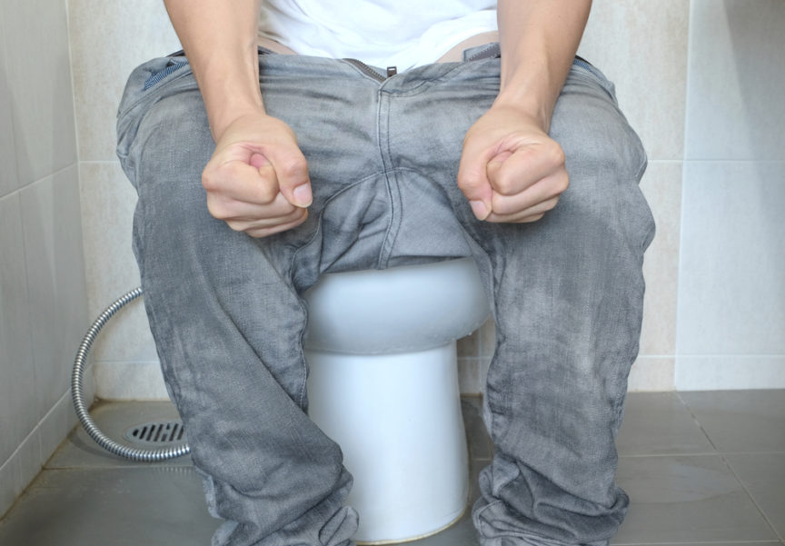

၀မ္းခ်ဳပ္ျခင္း – Constipation

၀မ္းခ်ဳပ္တယ္ဆိုတာ အူလမ္းေၾကာင္းလႈပ္ရွားမႈေတြဟာ နဂိုကထက္ ပိုၿပီး နည္းသြားတာကို ဆိုလိုတာ ျဖစ္ပါတယ္။ လူတိုင္းလိုလို မၾကာခဏ ႀကံဳေတြ ့ ရတတ္ၿပီး အရမ္းဆိုး၀ါးတဲ့ျဖစ္စဥ္ မဟုတ္ေပမဲ့ သက္သာသြားတဲ့အခါ ေနလို ့ ထိုင္လို ့ေကာင္းတာေတာ့ အမွန္ပါပဲ ။
လူတစ္ေယာက္နဲ ့ တစ္ေယာက္ ၀မ္းသြားတဲ့ ပံုစံကေတာ့ မတူပါဘူး ။ ဒါေပမဲ့ ၀မ္းမသြားတာ ၃ ရက္ထက္ ပိုၾကာတဲ့အခါ မစင္ေတြ စုပံုၿပီး ၀မ္းသြားရ ခက္ခဲတတ္ပါတယ္ ။
ဘာေၾကာင့္ ၀မ္းခ်ဳပ္ရတာလဲ?
- ေနထိုင္စားေသာက္မႈ ပံုစံေျပာင္းလဲမွဳရွိတာ၊
- ေရဓာတ္ အမွ်င္ဓာတ္ အားနည္းတာ၊
- ႏို႔နဲ႔ ႏို႔ထြက္ ပစၥည္းေတြကို အလြန္အကၽြံ စားသံုးတာ၊
- ကိုယ္လက္ လႈပ္ရွားမႈ မရွိတာ၊
- ၀မ္းသြားရမယ့္ အခ်ိန္မွာ ထိန္းခ်ဳပ္ထားတာ၊
- စိတ္ဖိစီးမႈမ်ားတာ၊
- မၾကာခဏ ၀မ္းႏႈတ္တာ၊
- မူးယစ္ေဆး ၊ စိတ္ေရာဂါေဆး၊ ကယ္လဆီယမ္ဓာတ္ ဓာတ္မ်ားတဲ့ ေဆးေတြ နဲ႔ သံဓာတ္အားျဖည့္ေဆး စတာေတြ သံုးစြဲၿပီး ေဘးထြက္ဆိုးက်ိဳးဒဏ္ ခံစားရတာ၊
- အစား ေရွာင္လြန္းတာ၊
- ကိုယ္၀န္ေဆာင္ေနတဲ့အခါ ၊
- ဦးေႏွာက္နဲ႔ အာရံုေၾကာဆိုင္ရာေရာဂါ၊ အူမႀကီးကင္ဆာ ေရာဂါ ခံစားေနရတာ
- သိုင္းရြိဳက္ေဟာ္မုန္းဓာတ္ နည္းတဲ့ေရာဂါ ခံစားရတာ စတာေတြေၾကာင့္ ၀မ္းခ်ဳပ္တာ ျဖစ္တတ္ပါတယ္။
ေရာဂါလကၡဏာမ်ား
- ၀မ္းသြားရခက္ခဲတာ၊
- စမ်ဥ္းတံုးေတြ ထြက္တာ၊
- ၀မ္းက်န္တာကို ခံစားရေနရတာ၊
- ဗိုက္ေအာင့္တာ၊
- အူလမ္းေၾကာင္း လႈပ္ရွားမႈ နည္းတာ စတာေတြကို ႀကံဳေတြ ့ရတတ္ပါတယ္။
ဒါဆို ဘာလုပ္သင့္သလဲ ၊ ဘယ္လို ႀကိဳတင္ ကာကြယ္မလဲ
- ေရမ်ားမ်ား ေသာက္ပါ ၊ ဆရာ၀န္ညြန္ၾကားတဲ့ အခ်ိန္မွသာ ေလွ်ာ့ေသာက္ပါ
- မနက္ပိုင္းမွာ ေရေႏြးေသာက္ပါ
- အသီးအရြက္မ်ားမ်ား စားပါ
- ဂ်ံဳထြက္ ပစၥည္းေတြ စားသံုးပါ၊ အမွ်င္ဓာတ္မ်ားတဲ့ အစာေတြ ေတြပါ
- ေလ့က်င့္ခန္း ပံုမွန္ လုပ္ေဆာင္ပါ
- ၀မ္းသြားဖို ့မေမ့ပါနဲ႔၊ သြားခ်င္တဲ့အခ်ိန္မွာလည္း ထိန္းခ်ဳပ္ထားတာမ်ဳိး မလုပ္ပါနဲ႔။
-ဆရာ၀န္ရဲ႕ ညႊန္ၾကားခ်က္အတိုင္း ၀မ္းႏႈတ္ေဆးေတြကို သံုးစြဲပါ။
ဘယ္လို အေျခအေနမွာ ဆရာ၀န္နဲ ့ကုသမႈ ခံယူမလဲ
- ေနထိုင္ စားေသာက္တဲ့ အေလ့အက်င့္ ေျပာင္းလဲသြားတာေတာင္ ၀မ္းက ဆက္ၿပီး ခ်ဳပ္ေနတာမ်ဳိး၊
- ေသြး၀မ္းသြားတာ၊
- ကိုယ္အေလးခ်ိန္ အလိုလုိ က်လာတာ၊
- ဗိုက္ရစ္ၿပီး ေအာင့္တာ၊
- နွစ္ပတ္ထက္ေက်ာ္ၿပီး ၀မ္းခ်ဳပ္တာ၊
- ၀မ္းပံုစံ အေျခအေန ေျပာင္းလဲလာတာ
အထက္ပါ လကၡဏာေတြနဲ႔ ႀကံဳေတြ ့ေနရၿပီဆိုရင္ေတာ့ ဆရာ၀န္နဲ ့ ျပသသင့္ပါတယ္ ။
ဘာေတြ ေဆးစစ္ရမလဲ
- ေသြးတြင္း ေဟာ္မုန္း ပမာဏအတြက္ ေသြးစစ္ျခင္း
- စအိုၾကြက္သား အေျခအေနကို ဂရုျပဳျခင္း
- အူမႀကီး အေျခအေနအတြက္ လိုအပ္ေသာ စစ္ေဆးခ်က္ေတြ၊ မွန္ေျပာင္းၾကည့္တာ စတာေတြကို လိုအပ္သလို ျပဳလုပ္ရမွာပါ ။
ဒါဆို ၀မ္းမခ်ဳပ္ေအာင္ ဘယ္လိုေနရမလဲ
- အစာအဟာရ မွ်တေအာင္ သံုးေဆာင္ပါ၊ အမွ်င္ဓာတ္ပါ၀င္တဲ့ အစာေတြ မ်ားမ်ား စားပါ။ ဥပမာ- ဟင္းသီးဟင္းရြက္၊ ေကြကာ။
- ေရမ်ားမ်ားေသာက္ပါ၊
- ေကာ္ဖီေသာက္တာကို အတတ္ႏိုင္ဆံုး ေရွာင္ၾကဥ္ပါ၊
- တခ်ဳိ႕ လူေတြမွာ ႏို႔ထြက္ပစၥည္းေတြက ၀မ္းခ်ဳပ္ေစႏိုင္တာေၾကာင့္ ျဖစ္ႏိုင္ရင္ ေရွာင္ၾကဥ္ပါ၊
Source- ေဒါက္တာ ေအာင္ျပည့္ၿဖိဳးဦး